Google I/O Common Performance Gotchas in Jetpack Compose まとめ
Google I/O まとめ その4
概要
主にAndroid開発者目線でGoogle I/Oをまとめていきます。
4回目 Common Performance Gotchas in Jetpack Compose
内容
Compose アプリのパフォーマンスを最大化するために、避けるべきいくつかの落とし穴について紹介。
Configration
- アプリを構成する方法
- Compose アプリのパフォーマンスを評価するためには、R8最適化を有効にし、リリースモードで実行することが重要です
- デバッグモードを有効にしているとアプリケーション速度が低下するため
- アプリのパフォーマンス問題に気づいた時は、リリースモードでも同じ問題が発生するかを確認する必要があります
Gotchas
-
Something to remember
- 例として、名前のリストを表示する連絡先アプリを取りあげます。
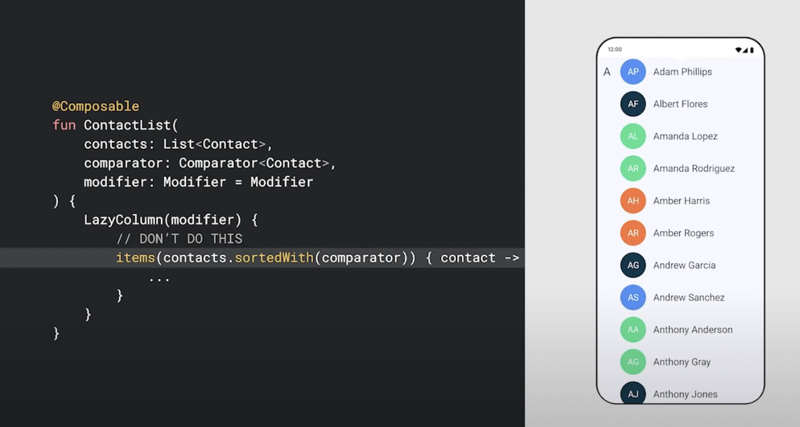
-
Re-Compose は頻繁に実行される可能性があるため、それを念頭に置いて実装する必要があります。
-
この例では、新しい行が追加されるたびに連絡先リストを再利用します。 Re-Compose され、コードが全て再実行されます。
-
ソートがこのスコープ内にあるため、Re-Compose のたびにソートが呼び出されます。
-
rememberを利用して、必要な場合のみ実行されるようにできます。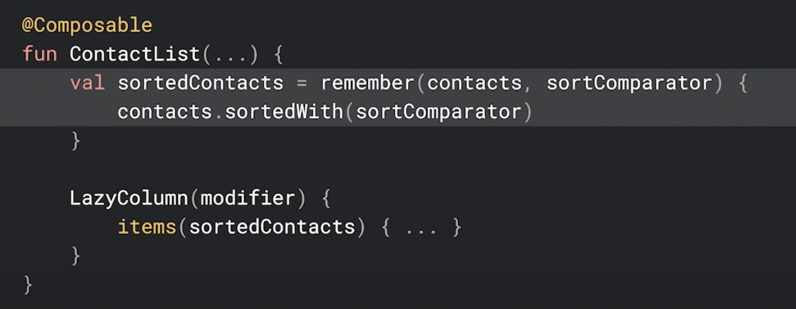
-
rememberに連絡先リストとsortComparatorをセットすることで、いずれかが変更されるたびにリストが再分類されますが、Re-Composeのたびに再構築されるわけではありません。 -
さらに最適化するには、この並べ替えを ViewModel, もしくは DataSource へ移動し、完全に Composable から外すことで、オーバーヘッドを最小限に抑えることができます。
-
LazyList Key
- リストに戻りましょう。
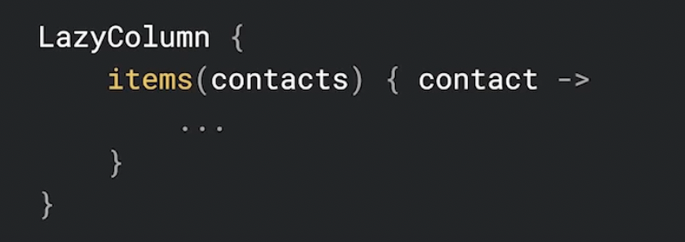
- LazyList でキーを定義して、どのアイテムが変更されたかを知るのに役立てられます。
- キーを提供しない場合、Compose はそのアイテムの位置をキーとして使用します。
- アイテムがリスト内を移動すると、その後のすべてのアイテムも Re-Compose されるため、パフォーマンスに悪影響を与える可能性があります。
- キーの提供は簡単です。
keyラムダをitems関数に追加するとキーを提供できます。各キーは一意である必要があります。
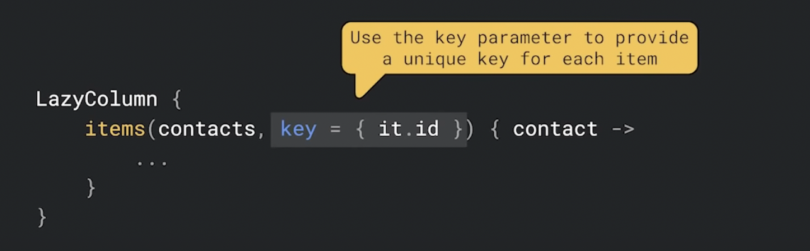
- これで、アイテムがリスト内で移動すると、 Compose はどのアイテムが移動したかを認識し、そのアイテムを Re-Compose するだけで済みます。
- キーは、 LazyList の最適化以外にも使用されます。詳細については Lazy Layouts in Composeを確認してください。
-
Deriving change
- 次に、私たちのデザイナーはスクロールしてトップへ戻るボタンの追加を我々に依頼しました。リストが下へスクロールされた後にのみ表示されるようにします。
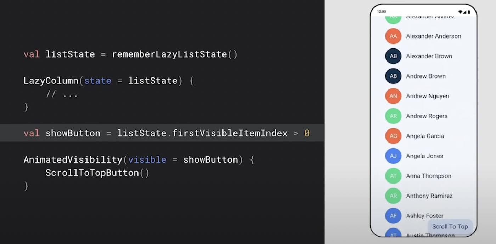
-
Compose の宣言型プログラミングにより、これが簡単になります。
firstVisibleItemIndexが 0 より大きい場合にtrueになるshowButtonという Boolean 変数を追加できます。これをAnimatedVisibilityのパラメーターとして使用できます。 -
しかし、問題があります。 LazyList は、全てのスクロールの全てのフレームで
listStateを更新し、listStateを読み取っているため、不要な大量の Re-Compose が起こります。 -
showButton変数の場合、firstVisibleItemIndexが 0 から 0 以外に変わる時だけを気にします。derivedStateOfがここで役立ちます。 -
derivedStateOfは、頻繁に更新されるlistStateを取得し、それらの変更を必要なものだけにバッファリングします。
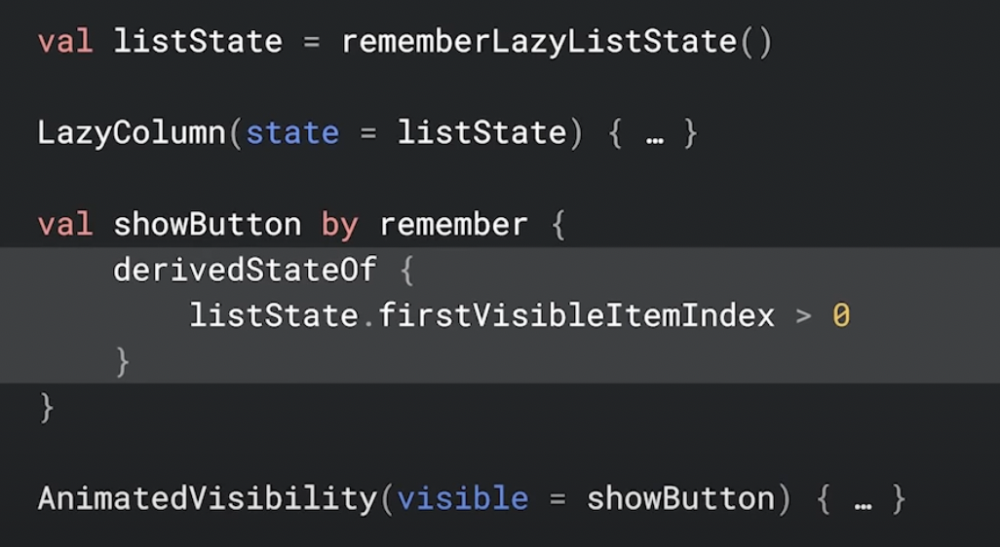
- この場合、条件
firstVisibleItemIndex > 0をderivedStateOfでラップします。この条件が実際に変更されたときのみ Re-Compose します。つまり、リストを下にスクロールしたときに1回、リストを上にスクロールしたときにもう一度 Re-Compose します。 - 状態を Bool 値に変換する時はいつでも
derivedStateOfが役立つかどうかを検討してください。 - 何が
derivedStateOfに適していないかを覚えておくことが重要です。ある State から変数を作成するたびにderivedStateOfを使用する必要はありません。
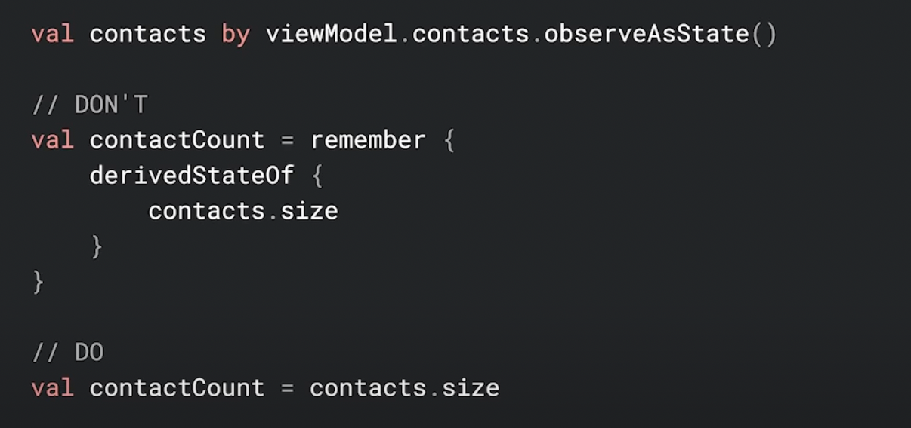
- この例では、連絡先リストのアイテム数を知りたいと思います。これは変更をバッファリングしないため、つまり
contactCount変数はカウント変更の State と同じように変更する必要があるため、derivedStateOfはわずかなオーバーヘッドを生み出し、冗長になります。
-
Procrastination
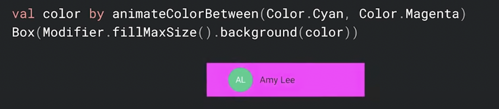
- 私たちのデザイナーは、UIの背景をアニメーションするように依頼しました。ここでは、シアンとマゼンタの間をアニメーションします。
- Compose でこれらのアニメーションを作成するのは非常に簡単です。ですが、ここで実行できる潜在的な最適化があります。
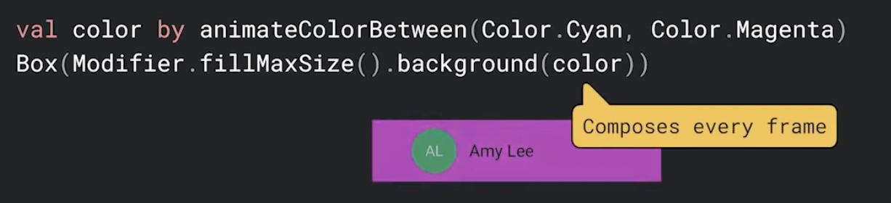
-
ここでは、 Compose に必要以上の作業を行うように依頼しています。アニメーションでは、このコードを全てのフレームで Re-Compose する必要があります。
-
Composition について
- ここで、Composition が必要ない理由を理解するためには、 Composition がどのように機能するかを理解する必要があります。
- Compose には、 Composition, Layout, Draw の3つの主要なフェーズがあります。
- 最初のフェーズ Composition では、
Composable関数が実行されます。このフェーズでは、アプリケーションのコンテンツを作成または更新し、次の2つのフェーズで何を行うかを定義します。 - 2番目のフェーズである Layout では、Composition で構成されたコンテンツが測定され、画面が表示される場所に配置されます。このフェーズでは、全ての
ModifierとText,Column,Rowなどの他のComposable関数の呼び出しが考慮され、1回のパスですべてのコンテンツが測定および配置されます。 - このフェーズについては2021年の Android Studio Dev サミット 「Deepdive into Jetpack Compose Layouts」で詳しく説明されています。
- 最終フェーズの Draw では、アプリケーションのキャンバスにコンテンツを描画するために、実際のグラフィック命令が発行されます。この命令は、線、円弧、長方形、画像、テキストなどのプリミティブな命令です。そしてそれらは、前のフェーズである Layout によって決定された場所に描画されます。
- これらの3つのフェーズは、読み取るデータが変更されるすべてのフレームで繰り返されます。
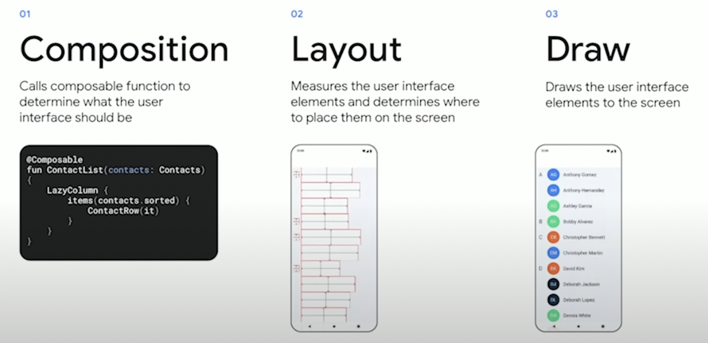
-
ただし、データが変更されない場合は、1つ以上のフェーズをスキップできます。
- このアプリケーションでは、アニメーション化され、フレームごとに色が変化するため、フレームごとに Composition も行われます。色しか描画していないので、 Composition と Layout のフェーズをスキップして、
Boxの色を新しい色で再描画できれば便利です。
-
Reading State
- State の読み取りを必要になるまで延期することは Compose の重要な概念です。
- 読み取りを延期すると、この場合のように、再実行する必要のある関数を減らすことができ、 Composition や Layout を完全にスキップできます。
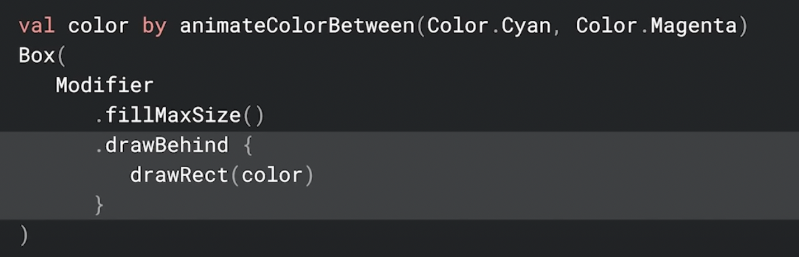
- このバージョンでは、
backgroundの代わりにdrawBehindを使用します。drawBehindは、 Compose の draw フェーズ中に呼びだされる関数インスタンスを取ります。色の値が読み取られるのはこの時だけなので、色が変わったときに変更する必要があるのは draw フェーズの結果だけです。 - その後、 draw フェーズが再実行必要な唯一のフェーズになり、 Compose が Composition と Layout の両方をスキップできるようになります。
- ここでのマジックは、 Composable 関数ではなく、関数インスタンスの色の状態を読み取ることです。関数インスタンスは変更されないため、読み取る変数は同じです。
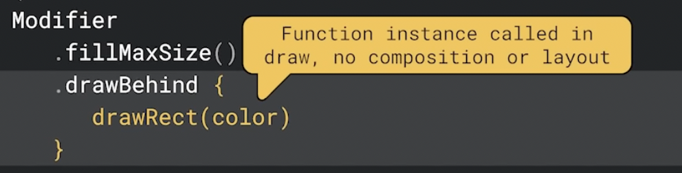
- このような関数インスタンスで状態を読み取り、それをパラメーターとして渡すことは、この場合のようにフェーズをスキップできるようにするだけでなく、必要なコード量も減らすためにも使用できます。
- これを利用する1つの方法は、ネストによって関数インスタンスを暗黙的に作成することです。
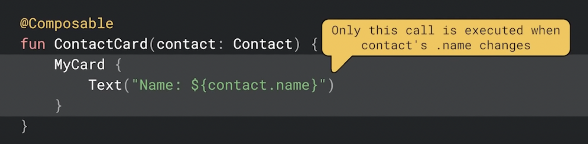
- ここでは、例えば連絡先の名前が変更された場合、
Textへの呼び出しのみが再実行されます。ContactCardとMyCardへの呼び出しは連絡先の名前を読み取らないためスキップされます。Textを呼び出すだけで、関数インスタンスにキャプチャされます。
-
Running backwards
- この落とし穴は常に避けるべきコードです。
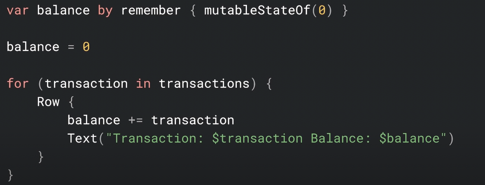
- ここで設計者は、銀行取引とそれに対応する残高のリストを表示するように依頼しました。
- これを行うために、残高の現在の合計を保持し、トランザクションごとに更新してからトランザクションと新しい残高を表示します。ただし、これには問題があります。
- アプリケーションのシステムトレースを行った際に、メインスレッドが予想より遥かに Busy になっていることに気づきました。
- 問題は、
balanceを更新するための行であることに気づきました。このコードは、 Compose の重要な前提に反しています。 - Compose は値が読み取られると、Composition が完了するまで変更されないことを前提としています。Composition ですでに読み取られている値には絶対に書き込まないでください。
- すでに読み取られたデータの書き込みは、 Backwards write (逆書き込み) と呼ばれます。すべてのフレームで Re-Compose が発生する可能性があります。
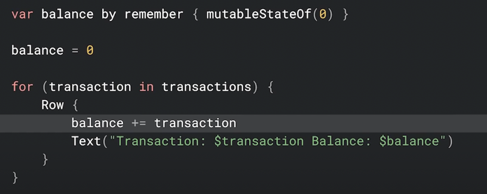
- Backwards write が起きているのは
balance更新行です。ただし、読み取りはText呼び出しでの書き込みの後に発生するように見えます。これはどのように Backwards write になっているのでしょう？
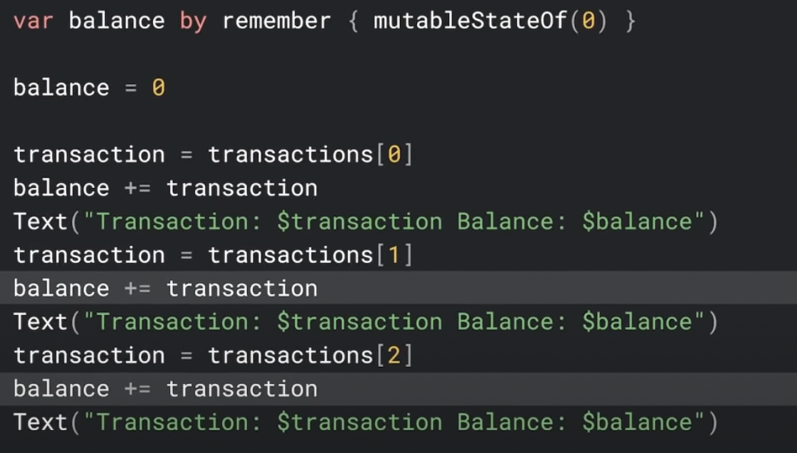
- ループを展開すると Backwards write がより明確になります。読み取る前に
balanceへ書き込むのは問題ありません。balanceを取得するためのループ処理が原因で、 Composition は常に古くなっているとみなし、再実行する必要があります。 - Composition が古いと判断した場合、次のフレームに新しい Composition をスケジューリングします。その Composition が古いと判断された場合、 Composition は次のフレームへ無限にスケジュールを設定します。
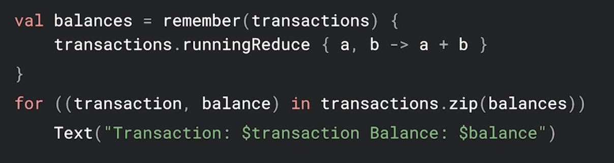
- これは
rememberを使用し、 State への書き込みを完全に回避する、より良いバージョンのコードです。このバージョンでは、Composable関数が最初に表示されたときに1回だけ実行されます。また、トランザクションが変更された場合のみ古くなったと見なされます。 - これの更に優れたバージョンは、前の並び替えの例のように ViewModel で
balanceを計算し、 Composition が開始される前でもこれらの計算を実行できるようにするバージョンです。 - Backwards write を避けるために、すでに読み取られた State に書き込みを行わないでください。
-
Baseline Profiless
- Android Studio からアプリを実行すると、最初の数秒間はアプリがギクシャクしているように見えることに気づきました。しかしその後はスムーズに見えます。
- 最初に、リリースモードとR8最適化で正しく構成されていることを確認しました。しかし、まだそれは起こります。
- Android Studio から実行している場合、コードが解釈されるため、起動時にパフォーマンスが低下することがよくあります。
- Baseline Profiles のおかげで、ほとんどの場合、ユーザーにはこれがありません。
- アプリに Baseline Profiles を追加すると、起動を高速化し、 Jank を減らし、パフォーマンスを向上させることができます。
- しかし、 Baseline Profiles とは正確には何でしょうか？
- Compose は、バンドルされていないライブラリであるため、Android の更新を待つことなく機能追加やバグ修正を行えます。しかしこれには少し欠点があります。
- Android はシステムリソースをアプリ間で共有します。これにより起動時間が短縮され、メモリ使用量が減少します。 Compose はこの共有を行いません。
- ユーザーが Play ストアからアプリをインストールすると、デバイスにダウンロードされたAPKには、すべてのコードに加えて、アプリにバンドルされるライブラリが含まれます。起動時にこのコードは Android ランタイムによって解釈され、マシンコードにコンパイルされます。このプロセスには時間がかかるため、パフォーマンスが低下する可能性があります。
- Play ストアにはこの状況を解決するために Cloud Profile という既存機能があります。Cloud Profile はアプリの起動を高速化するためのリストを提供します。これはアプリをアップデートするたびにクリアされます。
- Baseline Profiles は、Play ストアにこのリストを自分で提供する方法です。
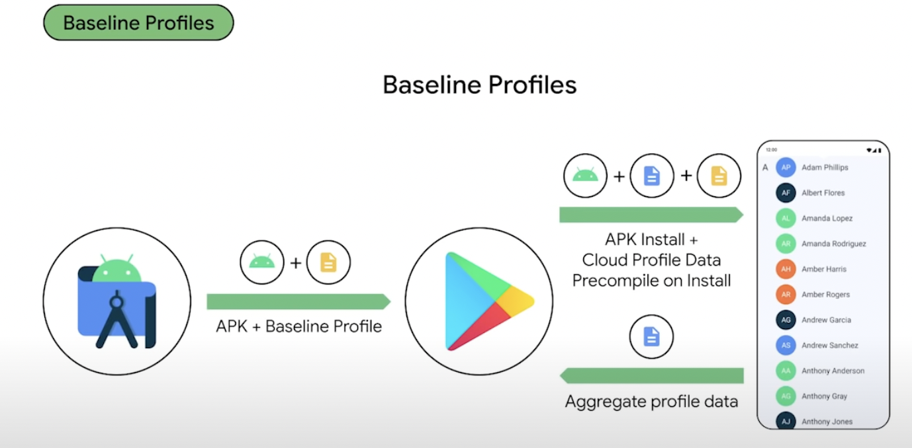
- ユーザーがアプリをダウンロードすると、 Play ストアに Baseline Profiles が含まれ、インストール時に常にプロファイルデータを利用できます。
- Compose には、デフォルトでAPKに独自の Baseline Profiles が付属しています。
- ただし、 Android Studio から実行する場合、 Baseline Profiles は含まれません。そのためローカルテストではこの利点はありません。
- Macrobenchmark ライブラリを利用して、 Baseline Profiles を有効にして起動するよう、アプリを構成できます。
- Baseline Profiles でパフォーマンスが向上しているかのテストには Macrobenchmark ライブラリを使用できます。
- Compose のサンプルアプリである Jetsnack にベースラインプロファイルを追加することで、起動パフォーマンスが 22% 向上します。
- Google Maps は平均起動時間を約30%改善しました。
- 起動時のパフォーマンスだけではなく、Play ストアは検索ページの初期レンダリング時間を 40% 改善できました。
まとめ
パフォーマンス向上のために行うこと
- Configration
remenber {}- LazyList Key
derivedStateOf {}- Defer reads
- Backwards write
- Baseline Profiles